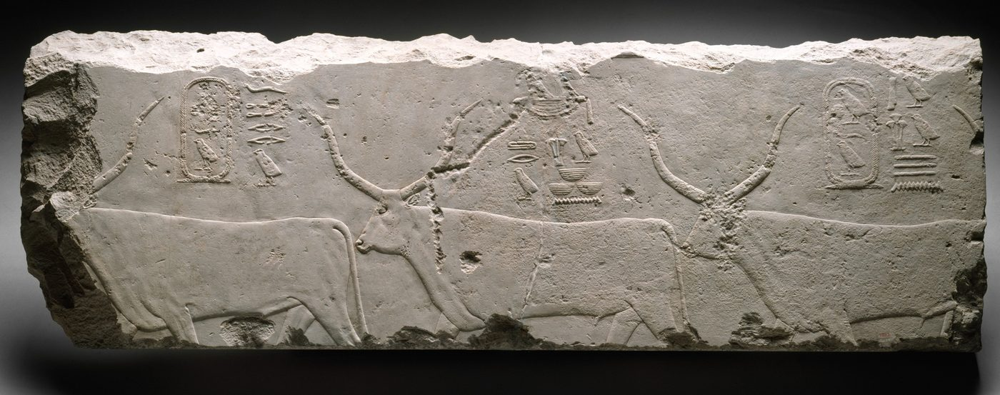

Unit 5 · Historical investigation · Lesson 3
Finding sources: library and online search strategies
Where do historians find reliable sources, how do they search, and how do they keep track of what they found?
Year 11 Ancient History · Present with → or space · Read on a phone with R
Review · books closed · 6 minutes · press K for the timer
Five questions and a writing item
- Write the five parts of OVPRL, in order. Origin, Value, Purpose, Reliability, Limitations (the OVPRL routine on page 2 of your booklet).
- Name one thing Tacitus’s account of Boudicca’s revolt (Annals 14) is reliable evidence for, and one thing it is not. Reliable for the outline of the revolt and for a Roman senator’s view of it; not for the Britons’ side, because no British account survives (Unit 4, Lesson 4).
- Name two of the eight topic areas an investigation can come from. Any two of the eight (NESA syllabus, p. 46), for example ‘the causes and impacts of a historical event’ and ‘the role of a significant historical individual’.
- What is a hypothesis? A provisional, testable answer to your question; research may confirm, modify or reject it.
- What does NESA’s investigate mean? ‘Plan, inquire into and draw conclusions about.’ (NESA, Glossary of key words) A question, sources and a conclusion.
- Writing · fix this question: “Tell me about the pyramids.” It names a topic, not a question to investigate: tell me about asks for a description, with no judgement, and the pyramids has no limits (which pyramids, and when?). Add a judgement stem, one focus and an issue the evidence can settle, as our class question does: How far does the evidence support Herodotus’s account of who built the Great Pyramid?
Mark your own answers in a different colour. Which question did you find hardest?
Learning intentions and success criteria · 2 minutes
Today’s goals
- locate a range of sources for an investigation
- record the research process accurately
- tell primary from secondary sources for my question
- use at least three search moves to find reliable sources
- write a log entry that records what I searched, found and decided
Syllabus outcomes: AH-11-05 analyses different types of sources for evidence to support a historical account or argument · AH-11-08 plans and conducts historical investigations and presents conclusions, using evidence from a range of sources. Life Skills: AH-LS-08 uses sources to form conclusions about the past · AH-LS-11 communicates information about the past using historical terms and concepts.
Note-making · the routine for the whole course
How to structure your notes
questions and key terms, written after
short phrases, arrows (→ leads to), abbreviations (c. = about; BCE = Before the Common Era)
- 1A new lesson, a new pageA cue column about a quarter of the page wide; title and date at the top; room for a summary at the bottom.
- 2Listen and look, then writeDon’t copy while a slide is being explained. Phrases, not sentences; write search strings exactly as typed.
- 3Write your own notes at the ✎ checkpointThen compare with the model notes, one row at a time. Add what you missed in a second colour.
- 4Write the cue questions afterwardsUse exam verbs: describe, explain, assess. To revise, cover your notes and answer the cues.
- 5Your research log is separateNotes hold what you learn; the log records what you searched, found and decided. One checkpoint today: finding sources.
Key vocabulary · add to the unit word wall
Words for finding and recording sources
| Research terms | Meaning |
|---|---|
| Primary / secondary source | A source from the time studied (an inscription, a papyrus, an object) / a later work about it (a historian’s book, an excavation report). Which one it is depends on your question. |
| Research log | A dated record of what you searched, found, read and decided. |
| Peer review | Checking of a scholarly article by other experts before publication. |
| Open access | Free to read online, without a subscription. |
| Writing terms | Meaning |
| Procedural recount | A past-tense record of steps taken, like a research log entry: ‘I searched … and found …’ |
| Added today | Meaning |
|---|---|
| Search string | The exact words and symbols you type into a search box, such as "Wadi al-Jarf" papyri. |
| Boolean operators | Words that combine search terms in catalogues and databases: AND (all of these words), OR (any of them: use it for synonyms) and NOT (leave this out; in Google, a minus sign). |
| Database | A searchable collection of records: articles (Google Scholar, JSTOR), texts (Perseus) or objects (a museum’s collection). |
| Paywall | A page that asks you to pay or log in before you can read the full text. |
1 · Finding sources · I do — where to look, with the teacher-librarian
Where to look: free places with reliable sources
| Where | What you find there | Use it for |
|---|---|---|
| Your library catalogue and teacher-librarian | The school’s books and ebooks. Search by keyword, then open a good record and follow its subject links. Ancient Egypt shelves at Dewey 932; Mesopotamia at 935. | A reliable overview to start from |
| State Library of NSW | A free card, online, for NSW residents. Members can log in from home to eresources such as JSTOR and the Loeb Classical Library. | Articles and translations you can’t read free elsewhere |
| Trove (National Library of Australia) | Books held in libraries around Australia; digitised Australian newspapers. | Finding where a book is held |
| Perseus · LacusCurtius · Livius.org | Ancient texts in translation, each with a named translator; Livius adds articles and photographs. | Primary sources |
| Museum collections: The Met · the Louvre; excavation teams’ websites, such as AERA | Objects, each with a museum number and a date, and a find-place where it is known; excavators report their own sites. | Objects and sites (check each record’s date) |
| Google Scholar · JSTOR’s free content | Scholarly articles and books. Most abstracts are free; on JSTOR, old journals and open-access articles are free to all, and a free account reads up to 10 articles every 30 days, where the publisher allows. | Peer-reviewed scholarship |
Wikipedia is a lead, not a source: read it for an overview, then follow its references.
1 · Finding sources · I do — six search moves on our class question, named as I use them · then cold call
Search moves: type less, find better
| Move | What it does | On our class question |
|---|---|---|
| Keywords and synonyms · OR | Search every name and spelling at once; OR (in capitals) means either word. | Khufu OR Cheops · "Wadi al-Jarf" OR "Wadi el-Jarf" |
| AND · NOT (minus) | AND keeps all the words (in Google, a space between words does this); a minus sign leaves a word out. | Merer AND papyri (a catalogue) · "pyramid builders" Giza -tour |
| "Exact phrase" | Quotation marks keep the words together, in that order. | "Lost City of the Pyramids" |
| site: | Searches one site, or one kind of site. No space after the colon. | site:aeraweb.org Merer · "pyramid builders" site:edu.au |
| filetype:pdf | Finds reports and articles saved as PDFs. | "Wadi el-Jarf" papyri filetype:pdf |
| Reference trail | Follow a good source’s references back, and its Cited by link forward. | Wikipedia → Tallet and Marouard (2014) → Cited by |
Perseus’s Herodotus spells the king Kheops; the same translation on LacusCurtius, and The Met, spell him Cheops. Which move finds sources that use any of his names, and how?
Synonyms joined with OR: Khufu OR Cheops OR Kheops. One spelling alone misses every source that uses another; the spelling a source uses is itself a search term.
1 · Finding sources · I do — read the address before you trust the page · then cold call
Read the URL: who is behind this page?
- www.perseus.tufts.edu/hopper/text?doc=Perseus:text:1999.01.0126:book=2:chapter=124A university’s digital library (.edu: a US university). The rest of the address names the text, the book and the chapter, so you can cite the exact passage.
- penelope.uchicago.edu/Thayer/E/Roman/Texts/Herodotus/home.htmlA university’s server, but the path names one person: this is Bill Thayer’s site, LacusCurtius. A university address does not always mean the university wrote it.
- aeraweb.org/projects/lost-city/Anyone can register a .org address, so the ending tells you nothing. Here it is the excavation team’s own site: read its About page.
- en.wikipedia.org/wiki/Diary_of_MererAn encyclopedia anyone can edit: a lead to sources, not a source to cite.
- doi.org/10.5615/neareastarch.77.1.0004A DOI: a permanent link to one published article. It opens the publisher’s page, which may have a paywall.
Two addresses end in .edu. Why might you trust them differently?
Perseus is the university’s own library. LacusCurtius sits on a university server, but /Thayer/ shows it is one scholar’s site. Both can be useful: just know whose work you are reading, and check whose translation it uses.
1 · Finding sources · I do — from Wikipedia to the article, live · then cold call
Follow the trail to the article, and get past the paywall
- 1An overview, then its sourcesWikipedia, ‘Diary of Merer’: read it, then scroll to its references. News sites and popular websites sit beside the scholars.
- 2Pick the scholarly referenceTallet, P. and Marouard, G. (2014) ‘The Harbor of Khufu on the Red Sea Coast at Wadi al-Jarf, Egypt’, Near Eastern Archaeology, 77(1), pp. 4–14: the excavators themselves, in a journal.
- 3Find it in Google Scholar
"Wadi al-Jarf" papyri: the abstract, Cited by and All versions. - 4The publisher’s page: a paywallDon’t pay. Try the routes past a paywall, and log what you decided.
- Google Scholar’s All versions or a [PDF] link: a free copy, often the author’s. Check who posted it: the publisher, the authors, or someone else?
- The State Library of NSW: log in to its JSTOR with your free card, and check the journal is there.
- A free JSTOR account: up to 10 articles every 30 days, where the publisher allows.
- A reliable free report of the same work, such as D. Weiss, ‘Journeys of the Pyramid Builders’, Archaeology (2022).
- Ask the teacher-librarian.
Why not just cite Wikipedia’s summary of Merer’s papyri?
Anyone can edit it, and it summarises other people’s work. Use it to find the sources (here, the excavators’ article), then read and cite those.
1 · Finding sources · I do — a museum database, then sort for our class question · cold call
A museum database: when was it made, and is it primary for our question?

It finds this relief, dated to Khufu’s reign, and small scarabs inscribed with his name, made more than 1,800 years later. A name in a record is not evidence from his time: read the date.
For our class question, is each source primary or secondary, and how useful is it?
| Source | For our class question |
|---|---|
| Merer’s papyri | Primary: logbooks kept by an inspector late in Khufu’s reign. |
| Tallet and Marouard (2014) | Secondary: modern scholars, the excavators, writing about the site and the papyri. |
| The relief with Khufu’s cattle | Primary for his reign, but its cattle are probably offerings for his cult: it does not show who built the pyramid, so it is of little use here. |
| A scarab with Khufu’s name | Primary for how Egyptians remembered him much later; not evidence from his reign. |
| Herodotus 2.124 | An ancient source, written more than 2,000 years after Khufu: for our question it is the claim we test. |
1 · Finding sources · I do — checking a chatbot’s references in Google Scholar · then cold call
A chatbot is not a source: check every reference it gives
Within this set of documents, 55% of the GPT-3.5 citations but just 18% of the GPT-4 citations are fabricated.
W. H. Walters and E. I. Wilder, Scientific Reports 13 (2023), article 14045 · the researchers searched databases for 636 references that two versions of ChatGPT wrote
Harrow, J. (2016) ‘Free workers at Giza: the crews of King Khufu’, Journal of Old Kingdom Labour Studies, 12(2), pp. 41–63.
A plausible author, title, journal, volume and pages. No such article or journal exists.
- 1Search the exact titleIn quotation marks, in Google Scholar and the library catalogue.
- 2Check the journalDoes it exist, and does that volume hold the article on those pages?
- 3Follow the DOIIf one is given, does it open this article?
The title finds nothing in Google Scholar or the catalogue. What do you do?
Treat it as fabricated: don’t cite it, and log it as rejected. Cite only sources you have found and read yourself. Even real references from a chatbot can carry wrong details, so check them too.
2 · AI for a set purpose · 3 minutes · watch, then test two terms together
When your teacher permits AI for a purpose, log and acknowledge it like this
- AI is not a source: it can invent facts and references.
- Use it only for the purpose your teacher permits, such as suggesting search terms.
- Check everything it suggests in a real catalogue or database.
- Log the tool, your exact prompt and what you kept, and acknowledge the use.
- AI never writes, paraphrases or summarises for you.
Why test the AI’s search terms before you keep them?
A chatbot can invent a name or term, or suggest one that assumes the answer. A term earns its place in your log only when real sources use it.
- Date
- [date]
- Tool
- [name and version]
- Purpose
- suggesting search terms, as my teacher permitted
- Exact prompt
- “Suggest ten search terms, including other spellings and names, for researching who built the Great Pyramid of Giza.”
- Tested
- two terms in Google Scholar, Cheops and Heit el-Ghurab: both found scholarly articles
- Kept · rejected
- kept both (another name for Khufu; the builders’ town) · rejected ‘pyramid slaves’: it assumes an answer Herodotus never gives
Acknowledgement: “I used [tool, version] on [date] only to suggest search terms, as my teacher permitted. My prompt, its output and the terms I kept are in my research log, and I checked each kept term in Google Scholar. AI did not write, paraphrase or summarise any of my work.”
3 · Practice: search strings · We do — pairs try three strings, then agree the best move · then cold call
Practice: three search strings for the Assyrian question
The practice question · closed: no one may choose itWhy did the Assyrian Empire collapse in the late 7th century BCE?
- Write three search strings, each using a different move.
- Run each in Google, Google Scholar, the catalogue or a text collection.
- Agree which string found the best sources, and why.
| String | Why it works, or doesn’t |
|---|---|
"Neo-Assyrian Empire" collapse | Best for scholarship (Google Scholar): the scholars’ own term as a phrase, plus the question’s key idea. It should find articles such as Sinha et al. (2019), ‘Role of climate in the rise and fall of the Neo-Assyrian Empire’. |
site:livius.org "Fall of Nineveh" | Best for a primary source: one reliable site and an exact phrase find the chronicle’s translation (ABC 3). |
why did assyria collapse | Weakest: a whole question typed in brings up popular answer pages first, not scholars or sources. |
The best move depends on what you need: the scholars’ term as a phrase for articles; site: for a trusted text collection.
Notes checkpoint
Finding sources
4 · Research and the log · Writing focus · 6 minutes · I do → We do → apply
Writing focus: a log entry records what you did, in order
A log entry is a procedural recount: past tense · first person · time words · the exact search terms · a decision and its reason. Your report is the opposite: formal, with no I.
- Log
- “I searched … and found …; I decided …”
- Report
- “Tallet and Marouard (2014) describe Khufu’s harbour at Wadi al-Jarf.”
Worked example · written for this lesson, on the class question
In Lesson 3 I searched Google Scholar for “Wadi al-Jarf” papyri and found Tallet and Marouard (2014), which Wikipedia had cited; I recorded its details and decided to read it for how the crews were organised.
Time: when
I + past tense
Exact terms: as typed
Decision: what next, and why
Write your first log entry with the frame “I searched [where] for [exact terms] and found …; I decided … because …” Your Writing toolkit (booklet pages 3–4): connectives by function.
Fix this log entry for the search you just did on the Assyrian question: ‘Looked stuff up, found good sites.’
No I and no time · no place and no search terms (where, and which words?) · vague: stuff and good sites (which, and good for what?) · no decision.
A model fix · written for this lesson, on the practice question
First I searched Google Scholar for “Neo-Assyrian Empire” collapse and found Sinha et al. (2019) on climate and Assyria’s fall; then I searched Google for site:livius.org “Fall of Nineveh” and found a translation of the chronicle (ABC 3). I decided to read the chronicle first, because it is a Babylonian record of the siege.
4 · Research and the log · 24 minutes, including the Writing focus apply · check first · press K for the timer
Research: search for your own question, and log every search
- Write your first log entry with the frame.
- Search with your proposal’s keywords: at least three moves, in at least two places.
- Log every search as you go.
- For each promising source, record who made it, the date, the title, where you found it, the URL and the date you viewed it.
- Aim for at least four promising sources, each with the move that found it.
- Date
- When you searched.
- Where
- The catalogue, a text collection, a museum database, Google Scholar …
- Exact string
- Exactly as typed, quotation marks and all.
- Found
- Author, date, title, URL: or “nothing useful”.
- Decided
- What next, and why.
Check first: what must every log entry record?
The date, where you searched, the exact string, what you found (or that you found nothing), and what you decided and why: in the past tense, first person.
The search-moves card, the log template with sentence starters, and the teacher-librarian’s group.
Run one search in Google, Google Scholar and the catalogue. In your log, explain why the results differ and which tool serves your question best.
Your teacher meets the rest of the class today, for about two minutes each. Bring your proposal: your teacher approves your question, or asks for one change.
Exit ticket · 6 minutes · before you leave
Today’s log entry
Copy your best log entry from today: the exact search terms, the best source you found, and one decision with its reason.
“I searched [where] for [exact terms] and found …; I decided … because …”
the place and the exact string, as typed; a real source named precisely (author, date, title); one decision with a reason that comes from your question or a sub-question; past tense and first person throughout.
Then check yourself against today’s three “I can” statements. Next lesson: judging sources: OVPRL for modern and online sources.
Finish your notes If time · or at home
Summary: three sentences
- Where do you look for each kind of source?
- Which search moves find reliable sources, and what do you do at a paywall?
- What does a log entry record, and why keep one? Use our class search as your example.
I look for an overview in the library catalogue, ancient texts in translation on Perseus, LacusCurtius or Livius, objects in museum databases, and scholarship in Google Scholar, JSTOR’s free content and the State Library’s eresources, using Wikipedia only as a lead. Search moves such as OR for synonyms, an exact phrase and site: find reliable sources faster, and at a paywall I look for a free copy from the author or publisher, the State Library or a reliable free report instead of paying. A log entry records the date, the place, the exact string, what I found and what I decided, as when I followed Wikipedia’s reference to Tallet and Marouard (2014) and decided to read it for how Khufu’s crews were organised.
Practice and review · 1 of 3 · true, false, justify
True or false? Justify your answer
- 1Wikipedia is a reliable source to cite in your report. False — anyone can edit it, and it summarises other people’s work: use it as a lead and follow its references to the sources.
- 2Quotation marks make a search engine find the words together, in that order.
True — an exact-phrase search, such as
"Lost City of the Pyramids". - 3A website ending in .org must be run by a reliable organisation. False — anyone can register a .org address: find out who is behind the site.
- 4A reference from a chatbot is safe to cite if it gives an author and a journal. False — in a 2023 study, many chatbot references were fabricated; find and read the source yourself before you cite it.
- 5Whether a source is primary or secondary depends on your question. True — a scarab with Khufu’s name is primary for how later Egyptians remembered him, but not evidence from his reign.
- 6A research log entry should be written in the same formal register as your report. False — a log entry is a procedural recount (past tense, first person, the exact search terms); the report is formal, with no I.
Practice and review · 2 of 3 · searching and writing
Write better searches, and a better log entry
A question on Unit 4’s evidence: Why did Boudicca’s revolt break out? Rewrite each search with a named move.
boudiccawhy did boudicca rebel against the romanstacitus boudicca
- Synonyms with OR:
Boudicca OR Boudica OR Boadicea revolt - The scholars’ term as a phrase:
"Boudican revolt" causes - site: a text collection:
Tacitus Annals site:perseus.tufts.edu
Rewrite this entry for the museum-database search on our class question (The Met’s collection, searched for Khufu): ‘Googled it. Some stuff was useful.’
Then I searched The Met’s online collection for Khufu and found a relief with his cattle, dated to his reign (22.1.3a, b), and scarabs with his name made more than 1,800 years later; I decided to record only the relief as evidence from his reign, because the scarabs were made much later.
Practice and review · 3 of 3 · cover your notes and answer from memory
Quick checks
- Name three places to find an ancient text in translation. Perseus, LacusCurtius and Livius.org; each names its translator.
- What do quotation marks do in a search? They keep the words together, in that order: an exact-phrase search.
- What does site: do? Give an example.
It searches one site, or one kind of site, such as
site:livius.org "Fall of Nineveh"orsite:edu.au. - What can you do at a paywall? Look for a free copy (All versions or a [PDF] link) and check who posted it, use the State Library’s eresources with a free NSW card, use a free JSTOR account, read a reliable free report of the same work, or ask the teacher-librarian; then log what you decided.
- Why is a chatbot not a source? It can invent facts and references: in a 2023 study, 55% of the references from one version of ChatGPT, and 18% from a newer version, were fabricated. Check every reference in a real database.
- What does a research log entry record? The date, where you searched, the exact string, what you found, and what you decided and why, in the past tense and first person.
Sources and credits
Where everything comes from
W. H. Walters and E. I. Wilder, “Fabrication and errors in the bibliographic citations generated by ChatGPT”, Scientific Reports 13, 14045 (2023), open access (CC BY 4.0), quoted briefly. P. Tallet and G. Marouard (2014), Near Eastern Archaeology 77(1), pp. 4–14, doi:10.5615/neareastarch.77.1.0004. D. Weiss, “Journeys of the Pyramid Builders”, Archaeology (July/August 2022). Herodotus 2.124, A. D. Godley’s translation (Loeb, 1920), as revised by the Perseus Digital Library (CC BY-SA 3.0 US), quoted briefly in the teacher notes. Wikipedia, “Diary of Merer” (a lead only). The Met’s collection records 22.1.3a, b and 10.130.2. Livius.org, “ABC 3 (Fall of Nineveh Chronicle)”; A. Sinha et al., Science Advances 5(11) (2019), open access.
Places and search help (all free, checked 27 November 2026): State Library of NSW and its eresources; Trove; JSTOR, open and free content; Perseus Digital Library; LacusCurtius; Livius.org; The Met collection; Louvre collections; Google Scholar and its Search Help; Google Search Help, “Refine Google searches”; OCLC, Dewey Decimal Classification summaries.
Outcomes and content: NSW Education Standards Authority (NESA), Ancient History 11–12 Syllabus (2024). © NESA. NESA, Glossary of key words (definition quoted word for word).
- The reading room of the Mitchell Building, State Library of New South Wales, photographed in 2023 · Photo: Geoff Barker · CC BY-SA 4.0 · source
- Relief fragment with King Khufu’s cattle, limestone, reign of Khufu (The Met, 22.1.3a, b) · The Metropolitan Museum of Art, Rogers Fund and Edward S. Harkness Gift, 1922 · CC0 1.0 · source

All images are public domain or openly licensed, and were resized or cropped for the web. Each is shared under the licence shown.